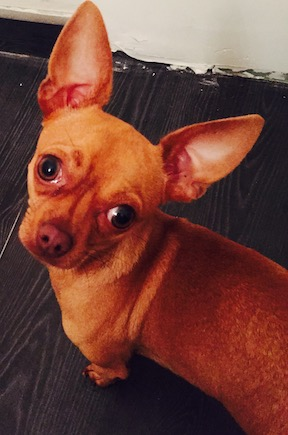
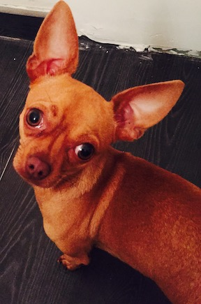
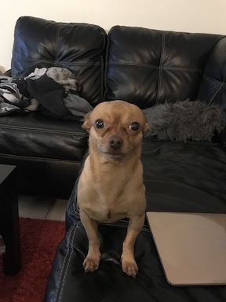
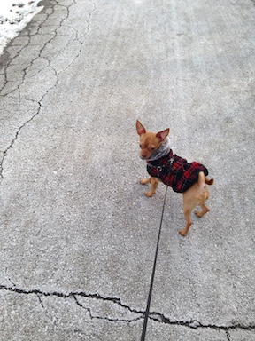

The Chihuahua is a balanced, graceful dog of terrier-like demeanor, weighing no more than 6 pounds.
The rounded “apple” head is a breed hallmark. The erect ears and full, luminous eyes are acutely expressive.
Coats come in many colors and patterns, and can be long or short. The varieties are identical except for coat.
Chihuahuas possess loyalty, charm, and big-dog attitude. Even tiny dogs require training, and without it this
clever scamp will rule your household like a little Napoleon. Compact and confident, Chihuahuas are ideal city pets.
They are too small for roughhousing with kids, and special care must be taken in cold weather, but Chihuahuas are
adaptable—as long as they get lots of quality time in their preferred lap.
A high-quality dog food appropriate to the dog’s age (puppy, adult, or senior) will have all the nutrients the
breed needs. Some Chihuahuas are prone to getting overweight, so watch your dog’s calorie consumption and weight
level. Treats can be an important aid in training, but giving too many can cause obesity. Give table scraps sparingly,
if at all, especially avoiding cooked bones and foods with high fat content. Learn about which human foods are safe for
dogs, and which are not. Check with your vet if you have any concerns about your dog’s weight or diet.
The two coat varieties of the Chihuahua have slightly different grooming needs. The smooth-coat Chihuahua will need
only occasional brushing and regular baths to look dapper, while the longhaired variety should have his coat brushed
at least once a week to avoid any tangles or mats. Both varieties should have their nails trimmed regularly. Good dental
care is necessary and should include brushing your dog’s teeth, and the vet might also recommend treats designed as part
of a tooth-care program. Check the Chihuahua’s ears regularly, and remove any excess wax or debris to avoid ear infections.
The Chihuahua loves to run and play and can usually get enough exercise in a very small space. Simply trotting around
following their people is usually enough exercise for this happy breed. Short, slow walks will keep your dog in good
weight and condition. Avoid overexerting the Chihuahua. If your dog is panting and working hard to keep up, it’s time
to pick him up and carry him home.
The Chihuahua is a very alert little dog of high intelligence. He is eager to please his humans and responds well to
positive training practices. Chihuahuas seem well aware of how cute they are and learn how to get their way. From the
very beginning you must enforce the fact that you are in charge. Never allow your Chihuahua puppy to do anything that
will be unacceptable in an adult. They can have a bit of a “terrier” temperament, so a firm but gentle hand is necessary
when training. They can excel in obedience training and other canine sports.
The majority of Chihuahuas are healthy little dogs, but there are some genetic issues that can affect the breed. You should
choose your dog from a breeder who routinely does genetic health screenings on all breeding stock to ensure that the puppies
they produce are as genetically sound as possible. Some of the issues that can possibly affect the Chihuahua include potential
heart problems (patent ductus arteriosus, mitral valve disease), eye disease, and patellar luxation (loose kneecaps).
Idiopathic epilepsy is also known to occur in the breed.
 